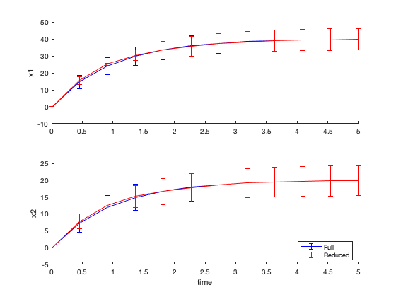
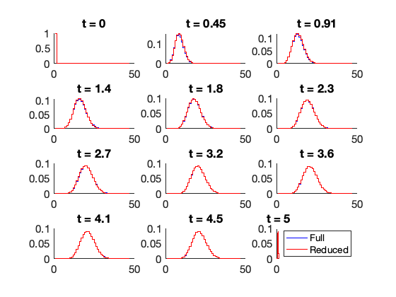

Contents
% In this example, we show how to create reduced FSP models using different % types of projectionbased transformations. close all clear all addpath('../CommandLine');
First, choose a model on which to illustrate the reduction approximation,
or you can create your own. Here are the example options defined below: (1) Poisson Process (2) Poisson Start at SS. (3) Two Species Poisson Process. (4) Time varying bursting gene expression model (DUSP1) See below for the codes to create each model so you can create your own.
testModel = 3;
Next, choose which type of model reduction to apply. Options include:
'Proper Orthogonal Decomposition' - solve the FSP once and then uses POD to construct a reduced basis set that covers the current FSP solution. For best use, this reduction should be found using a fine time resolution in the calculation of the FSP. The size of the reduced model must be specified as 'reductionOrder'. Because the POD requires a solution of the FSP, this reduction is usualy only helpful for situations where many solutions are needed (e.g., during model fitting). 'Log Lump QSSA' - forms a coarse rectangular mesh with grid points chosen logarithmically using the current FSP bounds. The number of grid lines must be specified in 'reductionOrder'. 'Eigen Decomposition Initial' - reduction to consider only the space spanned by the initial condition plus the eigvenvectors corresponding to the eigenvalues wite the largest real values. The number of modes to consider in the reduction is specified in 'reductionOrder'. Fort time varying systems, the basis vectors are found using the infinitesimal generator at t=0. 'No Transform' - test case where no reduction is applied. 'QSSA' - Reduction using QSSA applied to a specific species or set of species. The list of species to be assumed at QSSA must be specified in a vector 'reductionSpecies'.
reductionType = 'Proper Orthogonal Decomposition'; %{'Log Lump QSSA','Proper Orthogonal Decomposition','QSSA'}; reductionOrder = 20; qssaSpecies = 2; % Only needed for the QSSA reduction scheme. podTimeSetSize = 100; % Only needed for the POD reduction scheme. % Define SSIT Model % SSIT models are defined as usual: switch testModel case 1 % Poisson Process Model1 = SSIT; Model1.species = {'x1'}; Model1.initialCondition = 0; Model1.propensityFunctions = {'kr';'gr*x1'}; Model1.stoichiometry = [1,-1]; Model1.parameters = ({'kr',100;'gr',1}); Model1.fspOptions.initApproxSS = false; Model1.tSpan = linspace(0,3,10); case 2 % Poisson Start at SS. Model1 = SSIT; Model1.species = {'x1'}; Model1.initialCondition = [0]; Model1.propensityFunctions = {'kr';'gr*x1'}; Model1.stoichiometry = [1,-1]; Model1.parameters = ({'kr',40;'gr',1}); Model1.fspOptions.initApproxSS = true; Model1.tSpan = linspace(0,5,10); case 3 % Two Species Poisson. Model1 = SSIT; Model1.species = {'x1';'x2'}; Model1.initialCondition = [0;0]; Model1.propensityFunctions = {'kr';'gr*x1';'kp';'gp*x2'}; Model1.stoichiometry = [1,-1,0,0;0,0,1,-1]; Model1.parameters = ({'kr',40;'gr',1;'kp',20;'gp',1}); Model1.fspOptions.initApproxSS = false; Model1.tSpan = linspace(0,5,12); case 4 % Time varying model (DUSP1) Model1 = SSIT; Model1.species = {'ActiveGene';'mRNA'}; Model1.initialCondition = [0;0]; Model1.propensityFunctions = {'kon*(1+IGR)*(2-ActiveGene)';'koff*ActiveGene';'kr*ActiveGene';'gr*mRNA'}; Model1.stoichiometry = [1,-1,0,0;0,0,1,-1]; Model1.inputExpressions = {'IGR','a1*exp(-r1*t)*(1-exp(-r2*t))'}; Model1.parameters = ({'koff',0.14;'kon',0.14;'kr',10;'gr',0.01;... 'a1',0.4;'r1',0.04;'r2',0.1}); Model1.fspOptions.initApproxSS = true; Model1.tSpan = linspace(0,180,12); end
Solve the original Model (for comparison)
Solve once to get the necessary FSP projection space.
Model1 = Model1.formPropensitiesGeneral('Model1'); [fspSoln,Model1.fspOptions.bounds] = Model1.solve; % Solve again to record FSP solution time following expansion. tic [fspSoln,Model1.fspOptions.bounds] = Model1.solve(fspSoln.stateSpace); fullModelSolveTime = toc % Turn off further FSP expansion. Model1.fspOptions.fspTol = inf; % If using the POD, we will also need to generate basis set using solution % at finer resolution. Note -- this means that the POD will be inefficient % for the initial set up of the reduction. The benefits typically come % from solving the model multiple times with different parameters sets. if strcmp(reductionType,'Proper Orthogonal Decomposition') tSpan = Model1.tSpan; Model1.tSpan = linspace(min(Model1.tSpan),max(Model1.tSpan),podTimeSetSize); [fspSoln2,Model1.fspOptions.bounds] = Model1.solve(fspSoln.stateSpace); Model1.tSpan = tSpan; else fspSoln2 = fspSoln; end
fullModelSolveTime =
0.230021236
Solving the reduced models
Make a copy of the full model.
Model2 = Model1; % Set the solver to use ModelReduction Model2.modelReductionOptions.useModReduction = true; % FSP expansion should be supressed when using Model Reductions % Set type and order of Model Recution Model2.modelReductionOptions.reductionType = reductionType; Model2.modelReductionOptions.reductionOrder = reductionOrder; Model2.modelReductionOptions.qssaSpecies = qssaSpecies; % Call SSIT to compute the model reduction transformation matrices. Model2 = Model2.computeModelReductionTransformMatrices(fspSoln2); % Solve the reduce model. tic fspSolnRed = Model2.solve(fspSoln2.stateSpace); redModelSolveTime = toc % Make Figures to compare the results. Here, we will plot the original % model in blue and the reduced model in red lines. Model1.makePlot(fspSoln,'meansAndDevs',[],[],1,{'Color',[0,0,1]}) Model1.makePlot(fspSoln,'marginals',[],[],[2,3],{'Color',[0,0,1]}) Model2.makePlot(fspSolnRed,'meansAndDevs',[],[],1,{'Color',[1,0,0]}) Model2.makePlot(fspSolnRed,'marginals',[],[],[2,3],{'Color',[1,0,0]})
redModelSolveTime =
0.114765705
 